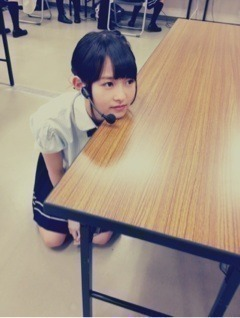

| 2012/10 14 Sun | 260回目*marika |
いつも読んでくださってる方、
初めて読んでくださった方、
コメントしてくださった方
ありがとうございます。
...
前回の訂正
×私が男だったから
○私が男だったら
すみませんすみませんすみません
私は過去に男じゃないです。
ぼけてました

教えてくださって
ありがとうございました

...
全国握手会in幕張メッセ
バイシクル最後の全握

今回は真夏も握手会に参加して
すごい盛り上がった♪
真夏、これからも頑張ろうね！
ミニライブ。
会場にたくさんの人で溢れていて
感動しました。
盛り上がったなぁ！
サイリウムきれいやった

第15レーンで
せいらりんといーっしょでした♪
めっちゃ声張った！
耳キーンなった！
でも楽し過ぎたー

らりん最高っ
来てくださったみなさん、
ありがとうございました！
らりん一家のみなさんも
にぎやかであったかくて
握手楽しかったです

まりっ会のみなさんもありがとう

フード率高かったよ笑
アドバイスなど、あったかいことば...
たくさんありがとう。
とっても安心します...
だいすき。
「まりっ会入会したい」
嬉しすぎたよ

料理の件。
めっちゃ疑われたけど、
サラダ作ったのよー！本当よー！笑
やればできる子ってほめられて
でへでへしてすみませんでした。

この髪型が好評でした。
嬉しかったあ
まりか
コメント(288)
2012/10/14 20:24